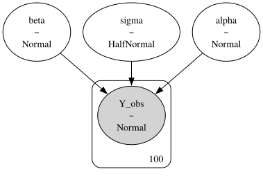
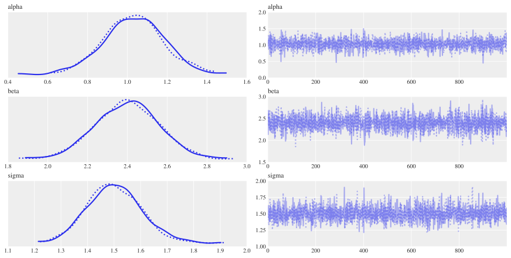
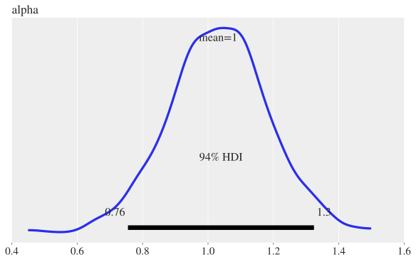
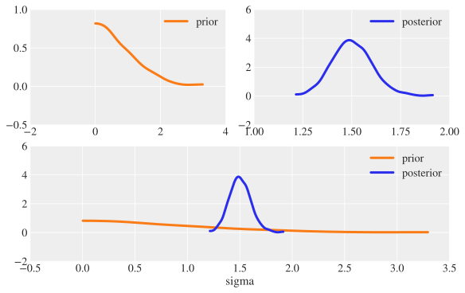
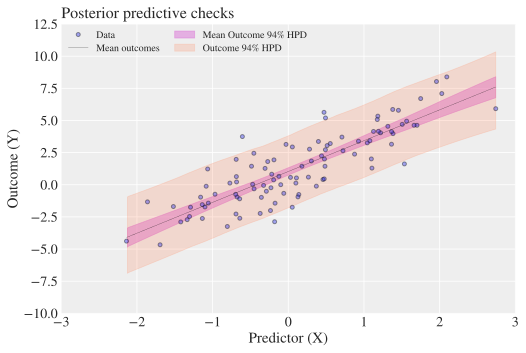

Bayesian Inference#
In this chapter, we’ll look at how to perform analysis and regressions using Bayesian techniques.
Let’s import a few of the packages we’ll need first. The key package that we’ll be using in this chapter that you might not have seen before is PyMC, a Bayesian inference package.
In the next chapter, we’ll look at an easier way to do Bayesian inference in Python, but you’ll find life easier overall if you start here. We’ll also use ArviZ for visualisation of the results from Bayesian inference, a package that builds on Matplotlib, but this will get automatically installed when you install PyMC. You should follow the install instructions for PyMC and Bambi carefully and, if you’re confident with using different Python environments, it’s a good idea to spin up a new ‘bayes’ environment to try them out in. In case you need a refresher, the chapter on Preliminaries covers basic information on how to install new packages.
The expert Bayesian may wonder, “why these packages?” There are many others available, even just in Python. One reason is that they’re simpler to use for beginners while having enormous power for advanced users too, so they’re very much in keeping with Python’s low floor, high ceiling style. The other is that they’re considerably more mature than some of the more recent alternatives based on popular tensor and machine learning packages (though PyMC is also built on an underlying tensor package). Finally, they also have flexible computing back-ends (including Jax and Numba, and including using GPUs), which means that super users can make their models go extremely fast should they need to—you can find more information on the speed-ups that are possible here.
This chapter has benefitted from the many Bayesian blogs and forum conversations across the web, in particular the ones here, here, here, here, and here.
Here are our initial imports and settings:
import warnings
import arviz as az
import matplotlib.pyplot as plt
import numpy as np
import pandas as pd
import pymc as pm
import xarray as xr
# Plot settings
plt.style.use(
"https://github.com/aeturrell/coding-for-economists/raw/main/plot_style.txt"
)
az.style.use("arviz-darkgrid")
# Pandas: Set max rows displayed for readability
pd.set_option("display.max_rows", 23)
# Set seed for random numbers
seed_for_prng = 78557
prng = np.random.default_rng(
seed_for_prng
) # prng=probabilistic random number generator
# Turn off warnings
warnings.filterwarnings("ignore")
# check pymc version
print(f"Running on PyMC v{pm.__version__}")
Running on PyMC v5.19.1
Introduction#
The biggest difference between the Bayesian and frequentist approaches (that we’ve seen in the other chapters) is probably that, in Bayesian models, the parameters are not assumed to be fixed but instead are treated as random variables whose uncertainty is described using probability distributions. The data are considered fixed. You might see the ‘inverse probability’ formulation of a Bayesian model written as \(p(\theta | y)\) where the \(y\) are the data, and the \(\theta\) are the model parameters. An interesting aspect of Bayesianism is that there is just one estimator: Bayes’ theorem.
This is a contrast with the frequentist view, which holds that the data are random but the model parameters are fixed, and models are often expressed as functions, for example \(f(y | \theta)\). Frequentist inference typically involves deriving estimators for the model parameters, and these are usually created to minimise the bias, minimise the variance, or maximise the efficiency. Not so with Bayesian inference.
As a reminder, Bayes’ theorem says that \({\displaystyle p(A\mid B)={\frac {p(B\mid A)p(A)}{p(B)}}}\), where \(A\) and \(B\) are distinct events, \(p(A)\) is the probability of event \(A\) happening, and \(p(A\mid B)\) is the probability of \(A\) happening given \(B\) has happened or is true. \(p\) could stand in for a single number, a probability density function, or a probability mass function. When dealing with data and model parameters, and ignoring a rescaling factor, this can be written as:
In these equations:
\(p({\boldsymbol{\theta}})\) is the prior put on model parameters—what we think the distribution of model parameters will look like.
\(p({\boldsymbol{y}}|{\boldsymbol{\theta }})\) is the likelihood of this data given a particular set of model parameters.
\(p({\boldsymbol{\theta }}|{\boldsymbol{y}})\) is the posterior probability of model parameters given the observed data.
Bayesian modelling proceeds as highlighted in the review article, Bayesian statistics and modelling [van de Schoot, Depaoli, King, Kramer, Märtens, Tadesse, Vannucci, Gelman, Veen, Willemsen, and others, 2021]:

One key strength of the Bayesian approach is that it preserves uncertainty—by construction, it includes the degree of belief you have in a parameter. This makes it especially useful in cases where uncertainty is important because the uncertainties are propagated all the through to the final results. One disadvantage of the Bayesian approach is that it’s not always as fast and doesn’t always scale well to very large datasets.
Actually estimating \(p({\boldsymbol{y}}|{\boldsymbol{\theta }})p({\boldsymbol{\theta }})\) is done computationally, at least for all but the most trivial examples.
The methods used to do this are all some variation on the Monte Carlo method, a tool that goes much wider than Bayesian inference. Monte Carlo techniques use random numbers to choose samples that allow you to estimate properties of interest. It can be used to perform numerical integration and is used for discrete particle simulations in fields like physics and chemistry. Rubinstein and Kroese [2016] provides a good introduction to the Monte Carlo methods more broadly, including simulation; Bielajew [2001] is a very good free textbook on Monte Carlo methods for particle transport physics.

Yoderj, Mysid; Wikipedia
Say we wanted to compute the integral of a 2D shape, a circle, to get an area. In the figure above, random pairs of numbers (say, \(x, y\)) are chosen within the unit square. By taking the ratio of the number of points that land within the 2D shape (40) to all samples (50), we can get an approximation of the area by computing (area of square) x ratio of samples \(= 3.2 \approx \pi\). This type of algorithm is a form of Monte Carlo rejection sampling.
Markov Chain Monte Carlo takes this a step further. A Markov Chain is a stochastic process where the chance of being in a particular state (for example, taking a particular sample) depends only on the previous state. These have equilibrium distributions; essentially a long-run average distribution over states. Markov Chain Monte Carlo finds the distribution you’re after (the posterior) by recording states from the chain; the more steps, the more closely the distribution of samples will match the distribution you’re trying to find out about. There are nice walkthroughs of MCMC available here, here, and here.
There are many algorithms for undertaking MCMC, with perhaps the most famous being the Metropolis-Hastings algorithm. For this, we have a probability density function to sample from, a function \(Q\) that quantifies where to make a transition, and \(\theta_0\), the first guess of the parameters. Starting from \(\theta = \theta_0\), the algorithm boils down to:
starting from this point \(\theta\), determine its match with the target distribution by estimating \(p = p({\boldsymbol{y}}|{\boldsymbol{\theta}})p({\boldsymbol{\theta}})\)
propose a new sample, \(\theta'\), using some transition function \(Q\), and check its match to the target (let this match be \(p'\))
compute the ratio of densities, \(\frac{p'}{p}\), as a metric of favourability of the new point
generate a random number \(r \thicksim \mathcal{U}[0, 1)\) and compare it to the ratio; accept the new point only if \(r < \frac{p'}{p}\)
repeat
The clever trick here is that, over time and with more samples, the points you draw will be from the target (posterior) distribution because, at each loop, we are forcing the samples to stick to the posterior distribution. The set of samples is often called a trace. You can find a nice walkthrough of the Metropolis-Hastings algorithm, with code, here.
The Metropolis-Hastings algorithm is a good place to start to understand what’s going on in computational Bayesian inference, but there are more modern and powerful algorithms available today, most notably Hamiltonian Monte Carlo (HMC), which takes its inspiration from physics (where the Hamiltonian is an operator that returns the total energy of the system). Instead of sampling completely randomly, which can be inefficient, HMC sees the sampler get ‘rolled’ (launched in a smooth trajectory) along the estimates of the posterior. There’s a very good explanation of this approach here, and a ‘conceptual introduction to HMC’ may be found in Betancourt [2018].
The most commonly used HMC sampler is the No U-Turn Sampler (NUTS), and this is what we’ll be using for most of our examples.
For the rest of this chapter, you won’t need to worry about most of this though! The joy of PyMC and Bambi is that they take care of some of the hard work for us. Expert users will want to dig further into the details, but these packages make running your first Bayesian inference easier with sensible default settings.
Bayesian Modelling: A Simple Example#
We’re going to set up a very simple example using synthetic data and a known data generating process;
where
For our prior distributions on the parameters, we will assume:
\(\alpha \thicksim \mathcal{N}(0, 10)\)
\(\beta \thicksim \mathcal{N}(0, 10)\)
\(\sigma \thicksim \mathcal{N_{+}}(1)\)
where, to be clear, these three parameters are scalars.
These priors are known as weakly informative priors because they are quite diffuse—the 10th and 90th percentile of a normal distribution with \(\sigma=10\) spans from, roughly, -13 to 13. With a weakly informative prior, a reasonably large amount of data will ensure that the prior will not be important and the posterior will hone in on a sensible range. We’re also implicitly assuming that the data are normalised so that 1 is a meaningful change and zero a sensible reference point. You may want to, for example, scale by the standard deviation of the data or take logs of (positive) predictors, so that coeficients can be interpreted as percent changes (more on rescaling later).
We know the ‘true’ values of the parameters, because we’re going to run a synthetic example, so we’ll set those first.
# True parameter values
alpha_true, beta_true, sigma_true = 1, 2.5, 1.5
# Size of dataset
size = 100
num_samples = 1000
num_chains = 2
# Predictor variable: random sample
X = prng.standard_normal(size)
# Simulate outcome variable
Y = alpha_true + beta_true * X + prng.standard_normal(size) * sigma_true
Using PyMC to do Bayesian inference#
Next, we’ll begin the Bayesian modelling part of the code. We’ll be using the powerful PyMC package [Salvatier, Wiecki, and Fonnesbeck, 2016]; check out the documentation for tutorials and examples. PyMC is likely the most popular package for probabilistic programming in Python, and its computations are built on what was originally a deep learning library. The aim of the package is to enable you to write down models using an intuitive syntax for the data generating process.
Let’s see how to specify a model in PyMC. We’ll start by putting with pm.Model() as linear_model:, to set the ‘context’; effectively to say, ‘what follows will be a model that we’ll save as linear_model. Any variables created within a given model’s context will be automatically assigned to that model. Next, we set our priors, giving the parameters meaningful names. Then, we build our model by writing down our expected outcome and the expected likelihood of observations according to that model. Up till now, we’re just rewriting in code all the bits we put down mathematically in the previous subsection. Finally, we run the ‘trace’: this is the part that estimates the posterior distribution by taking samples.
with pm.Model() as linear_model:
# Priors for unknown model parameters
alpha = pm.Normal("alpha", mu=0, sigma=10)
beta = pm.Normal("beta", mu=0, sigma=10)
sigma = pm.HalfNormal("sigma", sigma=1)
# Expected value of outcome
mu = alpha + beta * X
# Likelihood (sampling distribution) of observations
# this says, conditional on confounders, we expect normal variation
Y_obs = pm.Normal("Y_obs", mu=mu, sigma=sigma, observed=Y)
# Sample the posterior
trace = pm.sample(num_samples, return_inferencedata=True, chains=num_chains)
Initializing NUTS using jitter+adapt_diag...
Multiprocess sampling (2 chains in 2 jobs)
NUTS: [alpha, beta, sigma]
Sampling 2 chains for 1_000 tune and 1_000 draw iterations (2_000 + 2_000 draws total) took 1 seconds.
We recommend running at least 4 chains for robust computation of convergence diagnostics
So what just happened? The ‘NUTS sampler’ was auto-assigned. NUTS stands for the ‘No-U-turn sampler’. This is a just a fancy way of picking the points to sample \(p({\boldsymbol{y}}|{\boldsymbol{\theta }})p({\boldsymbol{\theta }})\) to build up a picture of \(p({\boldsymbol{\theta }}|{\boldsymbol{y}})\). It’s a good default option for sampling.
Let’s take a quick look at the model we just estimated using the model_to_graphviz() method—though note that this is a very simple model, and this method comes into its own in more complex cases.
pm.model_to_graphviz(linear_model)

We’ve made some assumptions in assembling this model, and it’s a good idea to make these explicit. The first is that the outcome data are independent once controlling for \(X\), the second that the outcomes are a linear function of the inputs, and the third that, at a given \(X\), the outcome variable \(Y\) will vary normally around the average value with a consistent standard deviation \(\sigma\). These are the assumptions for Bayesian normal regression.
Understanding the results from running a Bayesian model#
As discussed in the Introduction, the set of samples forms a trace, and this trace got returned by the pm.sample method above. We can now look at the trace that we created in the 2 separate chains we ran. Here it is as a standalone object to explore:
trace
-
<xarray.Dataset> Size: 56kB Dimensions: (chain: 2, draw: 1000) Coordinates: * chain (chain) int64 16B 0 1 * draw (draw) int64 8kB 0 1 2 3 4 5 6 7 ... 993 994 995 996 997 998 999 Data variables: alpha (chain, draw) float64 16kB 1.043 1.043 1.121 ... 0.7783 1.136 1.256 beta (chain, draw) float64 16kB 2.135 2.135 2.554 ... 2.176 2.333 2.598 sigma (chain, draw) float64 16kB 1.51 1.51 1.55 ... 1.454 1.594 1.548 Attributes: created_at: 2025-01-03T01:02:02.183141+00:00 arviz_version: 0.20.0 inference_library: pymc inference_library_version: 5.19.1 sampling_time: 1.2650964260101318 tuning_steps: 1000 -
<xarray.Dataset> Size: 252kB Dimensions: (chain: 2, draw: 1000) Coordinates: * chain (chain) int64 16B 0 1 * draw (draw) int64 8kB 0 1 2 3 4 5 ... 995 996 997 998 999 Data variables: (12/17) energy_error (chain, draw) float64 16kB 0.2472 0.0 ... 0.4279 smallest_eigval (chain, draw) float64 16kB nan nan nan ... nan nan step_size_bar (chain, draw) float64 16kB 1.04 1.04 ... 1.068 1.068 n_steps (chain, draw) float64 16kB 3.0 1.0 7.0 ... 3.0 3.0 step_size (chain, draw) float64 16kB 1.319 1.319 ... 0.9348 index_in_trajectory (chain, draw) int64 16kB 2 0 -2 -1 1 ... -2 -2 1 -1 2 ... ... perf_counter_start (chain, draw) float64 16kB 427.3 427.3 ... 427.8 energy (chain, draw) float64 16kB 190.8 191.6 ... 192.4 tree_depth (chain, draw) int64 16kB 2 1 3 2 2 3 ... 1 2 2 2 2 2 perf_counter_diff (chain, draw) float64 16kB 0.0004384 ... 0.000238 max_energy_error (chain, draw) float64 16kB 0.2472 0.3357 ... 0.4936 reached_max_treedepth (chain, draw) bool 2kB False False ... False False Attributes: created_at: 2025-01-03T01:02:02.196559+00:00 arviz_version: 0.20.0 inference_library: pymc inference_library_version: 5.19.1 sampling_time: 1.2650964260101318 tuning_steps: 1000 -
<xarray.Dataset> Size: 2kB Dimensions: (Y_obs_dim_0: 100) Coordinates: * Y_obs_dim_0 (Y_obs_dim_0) int64 800B 0 1 2 3 4 5 6 ... 93 94 95 96 97 98 99 Data variables: Y_obs (Y_obs_dim_0) float64 800B 3.386 -0.667 3.258 ... 3.367 1.848 Attributes: created_at: 2025-01-03T01:02:02.201366+00:00 arviz_version: 0.20.0 inference_library: pymc inference_library_version: 5.19.1
But it’s much easier to inspect some of what it holds using the pre-configured summaries, which are in table and chart form. First, a plot of the traces.
az.plot_trace(trace);

This looks like fairly meaningless noise, so let’s walk through what we’re seeing here. On the left-hand side, we can see the results of the two chains we ran for each of the three parameters. The x-axis is the parameter value, the y-axis is the probability density (no values shown). We’re actually looking at the posterior distributions here! We’ll come on to whether they make sense or not later, but for now we just know we’ve got some estimates of the posterior.
On the right-hand side, we have some traces, with the sample number on the x-axis and the parameter value on the y axis. Just looking at these gives our first sense of whether the sampling has gone well or not. Trace plots can give a sense of whether the model converged (you should see a trace that is a random scatter around a mean value), whether the chains are mixing (they should overlap randomly on the plot), and whether there are specific parameters that the model is struggling to estimate. If the sampling is not going well, neither of these will be true and the chains will not converge to occupy a small area, nor will they mix together.
From the above chart, it looks like we successfully created some well-behaved samples and have what appears to be a good estimate of the posterior.
Now let’s look at our actual estimates of these parameters by running the summary() function:
az.summary(trace, round_to=2)
| mean | sd | hdi_3% | hdi_97% | mcse_mean | mcse_sd | ess_bulk | ess_tail | r_hat | |
|---|---|---|---|---|---|---|---|---|---|
| alpha | 1.03 | 0.15 | 0.76 | 1.32 | 0.0 | 0.0 | 2360.56 | 1339.13 | 1.0 |
| beta | 2.40 | 0.16 | 2.11 | 2.70 | 0.0 | 0.0 | 2221.49 | 1501.22 | 1.0 |
| sigma | 1.50 | 0.10 | 1.29 | 1.68 | 0.0 | 0.0 | 2726.63 | 1759.77 | 1.0 |
In Bayesian inference, the coefficient or parameter estimates are extremely easy to interpret. For \(\alpha\), we have a mean of 1.03 with a standard deviation of \(\approx 0.15\), and a 94% confidence window between approximately 0.75 and 1.3. HDI stands for highest density interval, and you can choose a different percentage using the hdi_prob= keyword. We can produce a visualisation of the parameter estimates:
az.plot_posterior(trace, var_names=["alpha"], figsize=(8, 5));

This is telling us exactly what it looks like; the estimate is, with good confidence, around 1.
There were a bunch of other numbers in the trace summary; what did they mean? Let’s run through them:
The Gelman-Rubin \(\hat{R}\) statistic,
r_hat: this is a useful metric to determine whether the traces achieved stationarity, but it does require a number of chains (at least four) to make sense as a diagnostic. For a given parameter, the statistic is the ratio of the variance in the samples between the chains to the variance of samples within the chains, ie \(\hat{R} = \frac{\text{variance between chains}}{\text{variance within chains}}\). The value of \(\hat{R}\) approaches unity if the chains are properly sampling the target distribution and a rough guide is that it should be less than 1.01.Effective sample sizes,
ess_bulkandess_tail: ideally, samples would be independent but MCMC samples are correlated. These statistics give a sense how many effectively independent samples we are drawing given that correlation. The statistics are referred to either as effective samples size (ESS) or number of effective samples, \(n_\text{eff}\). The bulk version,ess_bulk, is the main statistic, whileess_tailis the effective sample size for more extreme values of the posterior (by default, the lower and upper 5th percentiles). The rule of thumb is that both should be \(>400\).The Monte Carlo standard errors (MCSE),
msce_meanandmcse_sd: They are measurements of the standard error of the mean and the standard error of the standard deviation of the sample chains. They provide an estimate as to how accurate the expectation values given from MCMC samples of the mean and standard deviation are. However, some believe these should not be reported.
The most useful numbers (apart from the coefficient estimates), then, are ess_bulk and ess_tail, and \(\hat{R}\). Remember that these statistics are mostly tell us how good the sampling is, rather than how appropriate the model is.
Checking the Posterior Distribution#
It would be good to compare the posteriors to the priors, to see how far we got away from those weakly informative normal (and, in one case, half-normal) priors we used and how nice the posteriors look. Remember, it’s not a good sign if our posterior is very much influenced by our prior (unless we have a reason to have a strong prior).
To do this we need to assemble all of the information on our model, priors, and posteriors in one object, for which there’s a couple of extra steps. We’ll stash all of the information about our model in the object called trace, but we’ll add a lot more info to it.
The first task is to add samples of the posterior predictive distribution.
with linear_model:
pm.sample_posterior_predictive(trace, extend_inferencedata=True, random_seed=prng)
Sampling: [Y_obs]
Now if we look at trace again, it has been extended with ‘posterior predictive’ values.
trace
-
<xarray.Dataset> Size: 56kB Dimensions: (chain: 2, draw: 1000) Coordinates: * chain (chain) int64 16B 0 1 * draw (draw) int64 8kB 0 1 2 3 4 5 6 7 ... 993 994 995 996 997 998 999 Data variables: alpha (chain, draw) float64 16kB 1.043 1.043 1.121 ... 0.7783 1.136 1.256 beta (chain, draw) float64 16kB 2.135 2.135 2.554 ... 2.176 2.333 2.598 sigma (chain, draw) float64 16kB 1.51 1.51 1.55 ... 1.454 1.594 1.548 Attributes: created_at: 2025-01-03T01:02:02.183141+00:00 arviz_version: 0.20.0 inference_library: pymc inference_library_version: 5.19.1 sampling_time: 1.2650964260101318 tuning_steps: 1000 -
<xarray.Dataset> Size: 2MB Dimensions: (chain: 2, draw: 1000, Y_obs_dim_2: 100) Coordinates: * chain (chain) int64 16B 0 1 * draw (draw) int64 8kB 0 1 2 3 4 5 6 ... 993 994 995 996 997 998 999 * Y_obs_dim_2 (Y_obs_dim_2) int64 800B 0 1 2 3 4 5 6 ... 93 94 95 96 97 98 99 Data variables: Y_obs (chain, draw, Y_obs_dim_2) float64 2MB 4.021 -0.9975 ... 2.541 Attributes: created_at: 2025-01-03T01:02:04.722263+00:00 arviz_version: 0.20.0 inference_library: pymc inference_library_version: 5.19.1 -
<xarray.Dataset> Size: 252kB Dimensions: (chain: 2, draw: 1000) Coordinates: * chain (chain) int64 16B 0 1 * draw (draw) int64 8kB 0 1 2 3 4 5 ... 995 996 997 998 999 Data variables: (12/17) energy_error (chain, draw) float64 16kB 0.2472 0.0 ... 0.4279 smallest_eigval (chain, draw) float64 16kB nan nan nan ... nan nan step_size_bar (chain, draw) float64 16kB 1.04 1.04 ... 1.068 1.068 n_steps (chain, draw) float64 16kB 3.0 1.0 7.0 ... 3.0 3.0 step_size (chain, draw) float64 16kB 1.319 1.319 ... 0.9348 index_in_trajectory (chain, draw) int64 16kB 2 0 -2 -1 1 ... -2 -2 1 -1 2 ... ... perf_counter_start (chain, draw) float64 16kB 427.3 427.3 ... 427.8 energy (chain, draw) float64 16kB 190.8 191.6 ... 192.4 tree_depth (chain, draw) int64 16kB 2 1 3 2 2 3 ... 1 2 2 2 2 2 perf_counter_diff (chain, draw) float64 16kB 0.0004384 ... 0.000238 max_energy_error (chain, draw) float64 16kB 0.2472 0.3357 ... 0.4936 reached_max_treedepth (chain, draw) bool 2kB False False ... False False Attributes: created_at: 2025-01-03T01:02:02.196559+00:00 arviz_version: 0.20.0 inference_library: pymc inference_library_version: 5.19.1 sampling_time: 1.2650964260101318 tuning_steps: 1000 -
<xarray.Dataset> Size: 2kB Dimensions: (Y_obs_dim_0: 100) Coordinates: * Y_obs_dim_0 (Y_obs_dim_0) int64 800B 0 1 2 3 4 5 6 ... 93 94 95 96 97 98 99 Data variables: Y_obs (Y_obs_dim_0) float64 800B 3.386 -0.667 3.258 ... 3.367 1.848 Attributes: created_at: 2025-01-03T01:02:02.201366+00:00 arviz_version: 0.20.0 inference_library: pymc inference_library_version: 5.19.1
Again, adding more information, we’ll now sample the predictive model based on just the prior, and extend the trace data to include it.
idata = pm.sample_prior_predictive(model=linear_model)
Sampling: [Y_obs, alpha, beta, sigma]
trace.extend(idata)
trace
-
<xarray.Dataset> Size: 56kB Dimensions: (chain: 2, draw: 1000) Coordinates: * chain (chain) int64 16B 0 1 * draw (draw) int64 8kB 0 1 2 3 4 5 6 7 ... 993 994 995 996 997 998 999 Data variables: alpha (chain, draw) float64 16kB 1.043 1.043 1.121 ... 0.7783 1.136 1.256 beta (chain, draw) float64 16kB 2.135 2.135 2.554 ... 2.176 2.333 2.598 sigma (chain, draw) float64 16kB 1.51 1.51 1.55 ... 1.454 1.594 1.548 Attributes: created_at: 2025-01-03T01:02:02.183141+00:00 arviz_version: 0.20.0 inference_library: pymc inference_library_version: 5.19.1 sampling_time: 1.2650964260101318 tuning_steps: 1000 -
<xarray.Dataset> Size: 2MB Dimensions: (chain: 2, draw: 1000, Y_obs_dim_2: 100) Coordinates: * chain (chain) int64 16B 0 1 * draw (draw) int64 8kB 0 1 2 3 4 5 6 ... 993 994 995 996 997 998 999 * Y_obs_dim_2 (Y_obs_dim_2) int64 800B 0 1 2 3 4 5 6 ... 93 94 95 96 97 98 99 Data variables: Y_obs (chain, draw, Y_obs_dim_2) float64 2MB 4.021 -0.9975 ... 2.541 Attributes: created_at: 2025-01-03T01:02:04.722263+00:00 arviz_version: 0.20.0 inference_library: pymc inference_library_version: 5.19.1 -
<xarray.Dataset> Size: 252kB Dimensions: (chain: 2, draw: 1000) Coordinates: * chain (chain) int64 16B 0 1 * draw (draw) int64 8kB 0 1 2 3 4 5 ... 995 996 997 998 999 Data variables: (12/17) energy_error (chain, draw) float64 16kB 0.2472 0.0 ... 0.4279 smallest_eigval (chain, draw) float64 16kB nan nan nan ... nan nan step_size_bar (chain, draw) float64 16kB 1.04 1.04 ... 1.068 1.068 n_steps (chain, draw) float64 16kB 3.0 1.0 7.0 ... 3.0 3.0 step_size (chain, draw) float64 16kB 1.319 1.319 ... 0.9348 index_in_trajectory (chain, draw) int64 16kB 2 0 -2 -1 1 ... -2 -2 1 -1 2 ... ... perf_counter_start (chain, draw) float64 16kB 427.3 427.3 ... 427.8 energy (chain, draw) float64 16kB 190.8 191.6 ... 192.4 tree_depth (chain, draw) int64 16kB 2 1 3 2 2 3 ... 1 2 2 2 2 2 perf_counter_diff (chain, draw) float64 16kB 0.0004384 ... 0.000238 max_energy_error (chain, draw) float64 16kB 0.2472 0.3357 ... 0.4936 reached_max_treedepth (chain, draw) bool 2kB False False ... False False Attributes: created_at: 2025-01-03T01:02:02.196559+00:00 arviz_version: 0.20.0 inference_library: pymc inference_library_version: 5.19.1 sampling_time: 1.2650964260101318 tuning_steps: 1000 -
<xarray.Dataset> Size: 16kB Dimensions: (chain: 1, draw: 500) Coordinates: * chain (chain) int64 8B 0 * draw (draw) int64 4kB 0 1 2 3 4 5 6 7 ... 493 494 495 496 497 498 499 Data variables: beta (chain, draw) float64 4kB 7.215 14.38 19.89 ... 7.226 2.808 -17.03 sigma (chain, draw) float64 4kB 1.323 1.372 0.4676 ... 0.5938 0.2742 alpha (chain, draw) float64 4kB 5.123 -9.464 2.394 ... -2.677 6.425 13.08 Attributes: created_at: 2025-01-03T01:02:04.843236+00:00 arviz_version: 0.20.0 inference_library: pymc inference_library_version: 5.19.1 -
<xarray.Dataset> Size: 405kB Dimensions: (chain: 1, draw: 500, Y_obs_dim_0: 100) Coordinates: * chain (chain) int64 8B 0 * draw (draw) int64 4kB 0 1 2 3 4 5 6 ... 493 494 495 496 497 498 499 * Y_obs_dim_0 (Y_obs_dim_0) int64 800B 0 1 2 3 4 5 6 ... 93 94 95 96 97 98 99 Data variables: Y_obs (chain, draw, Y_obs_dim_0) float64 400kB 13.23 3.547 ... 7.956 Attributes: created_at: 2025-01-03T01:02:04.845354+00:00 arviz_version: 0.20.0 inference_library: pymc inference_library_version: 5.19.1 -
<xarray.Dataset> Size: 2kB Dimensions: (Y_obs_dim_0: 100) Coordinates: * Y_obs_dim_0 (Y_obs_dim_0) int64 800B 0 1 2 3 4 5 6 ... 93 94 95 96 97 98 99 Data variables: Y_obs (Y_obs_dim_0) float64 800B 3.386 -0.667 3.258 ... 3.367 1.848 Attributes: created_at: 2025-01-03T01:02:02.201366+00:00 arviz_version: 0.20.0 inference_library: pymc inference_library_version: 5.19.1
Okay, now we can compare our priors and posteriors. Let’s do it for just one variable, \(\sigma\), for which our prior was a half normal distribution.
az.plot_dist_comparison(trace, var_names=["sigma"], figsize=(8, 5));

We can see here that the weakly informative prior, which has a relatively wide initial span, has been shrunk to a posterior that is in a tight bunch around the coefficient we set in the true data generating process.
Another typical check that is run is a check on whether the model can reproduce the patterns observed in the real data. We can use the plot for posterior/prior predictive checks to do this:
az.plot_ppc(trace, group="posterior", figsize=(8, 5));

While there are lots of diagnostic charts available in arviz, in this case it’s useful to roll our own to check visually how our model predicts the data, taking into account the heterogeneity in our data in a way that the posterior predictive check chart we just saw does not.
First, we’ll extract the samples that we already made of the posterior. Then we’ll use xarray (a package for working with labelled multi-dimensional data that is a dependency of PyMC) to multiply these samples through by the input data, \(X\). This will give us an output variable mu_pp that has shape (number of chains, number of samples, number of observations). You can see this below (and we’ll have to take an average over some of these dimensions to get a vector that has shape ‘number of observations’ only).
Don’t worry too much about the details of what’s going on; mostly it’s just constructing the equation we’re trying to estimate with the results of our Bayesian inference but with the added complication of multiple chains and multiple samples.
post = trace.posterior
mu_pp = post["alpha"] + post["beta"] * xr.DataArray(X, dims=["obs_id"])
mu_pp
<xarray.DataArray (chain: 2, draw: 1000, obs_id: 100)> Size: 2MB
array([[[3.02291705, 0.91503241, 3.27135775, ..., 0.63810304,
1.8923801 , 1.69471626],
[3.02291705, 0.91503241, 3.27135775, ..., 0.63810304,
1.8923801 , 1.69471626],
[3.48986943, 0.9687421 , 3.78701597, ..., 0.6375218 ,
2.13769505, 1.90127998],
...,
[3.30124643, 1.23831274, 3.54438909, ..., 0.96728894,
2.19481835, 2.00136972],
[3.02071147, 0.89315901, 3.27147027, ..., 0.61364573,
1.87962594, 1.68011777],
[3.13286883, 0.98838229, 3.38562352, ..., 0.70664424,
1.98270092, 1.78160479]],
[[3.34329427, 1.01233486, 3.61802714, ..., 0.70609841,
2.09311403, 1.87453167],
[3.2216975 , 0.80991544, 3.50595633, ..., 0.49306068,
1.92816906, 1.70200768],
[3.57082991, 1.02889583, 3.87042879, ..., 0.69494198,
2.2074961 , 1.9691299 ],
...,
[2.7962383 , 0.64829741, 3.04940013, ..., 0.36610554,
1.64421769, 1.44279764],
[3.29962533, 0.99705876, 3.57101174, ..., 0.69455251,
2.06467322, 1.84875336],
[3.66541971, 1.10043995, 3.96773482, ..., 0.76345841,
2.28972565, 2.04919837]]])
Coordinates:
* chain (chain) int64 16B 0 1
* draw (draw) int64 8kB 0 1 2 3 4 5 6 7 ... 993 994 995 996 997 998 999
Dimensions without coordinates: obs_idNow we can plot the mean outcomes and the data, along with confidence intervals for the mean outcomes and for all predictions.
fig, ax = plt.subplots()
ax.plot(X, Y, "o", ms=4, alpha=0.4, label="Data")
ax.plot(X, mu_pp.mean(axis=(0, 1)), label="Mean outcomes", alpha=1, lw=0.2, color="k")
az.plot_hdi(
X,
mu_pp,
ax=ax,
fill_kwargs={"alpha": 0.5, "color": "orchid", "label": "Mean Outcome 94% HPD"},
)
az.plot_hdi(
X,
trace["posterior_predictive"]["Y_obs"],
ax=ax,
fill_kwargs={"alpha": 0.2, "color": "coral", "label": "Outcome 94% HPD"},
)
ax.set_xlabel("Predictor (X)")
ax.set_ylabel("Outcome (Y)")
ax.set_title("Posterior predictive checks")
ax.legend(ncol=2, fontsize=10);

Fixed Effects and Categorical Variables As Regressors#
How do we go about fitting a model with a dummy or fixed effect using a categorical variable in Bayesian land? (At least when it’s an exogenous variable—we’ll come back to the case when the outcome variable is discrete later).
Let’s take the previous example and modify to include a group-specific intercept for two groups—so a dummy variable that is 0 for group 0, and 1 for group 1. Our model will now be:
where
For our priors, we will assume:
\(\alpha \thicksim \mathcal{N}(0, 10)\)
\(\beta \thicksim \mathcal{N}(0, 10)\)
\(\sigma \thicksim \mathcal{N_{+}}(1)\) (the half-normal distribution)
\(\gamma \thicksim \mathcal{N}(0.5, 10)\)
where
is the half-normal distribution.
Note that we are giving \(\gamma\) a mean prior that is not 0, because we do not expect there to be no influence at all from the group 1 contributions.
Let’s create the synthetic data for this model.
# True parameter values
α_true, β_true, σ_true, γ_true = 1, 2.5, 1.5, 6
# Size of dataset
size = 200
num_samples = 1000
num_chains = 4
# Predictor variables
X_cat = prng.standard_normal(size)
D = prng.binomial(1, 0.4, size) # This chooses 1 or 0 with 0.4 prob for 1
# Simulate outcome variable
Y_cat = α_true + β_true * X_cat + γ_true * D + prng.standard_normal(size) * σ_true
And now a model much like we did before:
with pm.Model() as linear_model_with_dummy:
# Priors for unknown model parameters
α = pm.Normal("α", mu=0, sigma=10)
β = pm.Normal("β", mu=0, sigma=10)
γ = pm.Normal("γ", mu=0, sigma=10)
σ = pm.HalfNormal("σ", sigma=1)
# Expected value of outcome
μ = α + β * X_cat + γ * D
# Likelihood (sampling distribution) of observations
Y_cat_obs = pm.Normal("Y_obs", mu=μ, sigma=σ, observed=Y_cat)
# Sample the posterior
trace = pm.sample(num_samples, return_inferencedata=True, chains=num_chains)
Initializing NUTS using jitter+adapt_diag...
Multiprocess sampling (4 chains in 2 jobs)
NUTS: [α, β, γ, σ]
Sampling 4 chains for 1_000 tune and 1_000 draw iterations (4_000 + 4_000 draws total) took 3 seconds.
Now we check the trace summary statistics—we won’t look at the trace visually this time, because we know what the answer should be!
az.summary(trace, round_to=2)
| mean | sd | hdi_3% | hdi_97% | mcse_mean | mcse_sd | ess_bulk | ess_tail | r_hat | |
|---|---|---|---|---|---|---|---|---|---|
| α | 0.78 | 0.13 | 0.52 | 1.01 | 0.0 | 0.0 | 2989.59 | 3121.29 | 1.0 |
| β | 2.45 | 0.10 | 2.27 | 2.64 | 0.0 | 0.0 | 3938.51 | 3278.27 | 1.0 |
| γ | 5.99 | 0.20 | 5.62 | 6.37 | 0.0 | 0.0 | 3009.36 | 2867.28 | 1.0 |
| σ | 1.40 | 0.07 | 1.27 | 1.53 | 0.0 | 0.0 | 3587.89 | 3091.30 | 1.0 |
This is close to the parameters we used to generate the data.
Priors#
This section has benefitted from Probabilistic Programming and Bayesian Methods for Hackers and the prior choice recommendations page of the Stan wiki.
Choosing Priors#
While Bambi (which we’ll come to shortly) will choose priors for you, you can override them—and there are many situations where you may wish to do this. And for PyMC, you always have to specify your priors. But how do you choose?
There are two important paradigms to be aware of when choosing priors: objective priors, where the data influence the posterior the most, and subjective priors, where the economist expresses their views in the form of the prior.
The quintessential example of an objective prior is the flat prior, literally a uniform distribution over the entire possible range of the variable that is to be estimated. By choosing this, you are saying that you put equal weight on all possible values. You would very rarely use this in practice, and priors with soft boundaries are generally preferred over those with hard boundaries.
A subjective or informative prior, however, would have more probability density or mass on certain values, biasing the final estimate toward that part of the range. You might use this if there were lots of previous evidence for something, or if there were extra information outside of the model that you wanted to incorporate. An informative prior reflects a higher degree of certainty about where the final values might end up, and will take a stronger pull to overcome.
Inbetween these two extremes are weakly informative priors, which are the default in Bambi and a good place to start in PyMC models, especially if your data are appropriately normalised.
We’ve already seen some handy priors such as the normal distribution, half-normal distribution, and Student-t distribution (plus it’s half equivalent too). You can find a full list of priors supported by PyMC here, in the section on distributions. Some priors to check out are:
Cauchy and half-Cauchy
Beta
Gamma
Binomial (discrete)
Bernoulli (discrete)
Poisson (discrete)
If you need a generic prior as a place to start for anything, some people recommend \(\mathcal{N}(0, 1)\) or \(\text{Student-t}(3,0,1)\), assuming your data is appropriately normalised and could be negative or positive.
Scaling Data#
Aim to keep all the parameters in your model “scale-free”. This means adjusting them so that a unit increase is meaningful. This will help in numerous ways, including giving a chance for priors like \(\mathcal{N}(0, 1)\) or \(\mathcal{N}(0, 10)\) to work.
Some suggested ways of scaling your data could be:
Scale by the standard deviation of the data via \(x \longrightarrow x/\sigma_{x}\), for example, if you were looking at test scores you might divide by the standard deviation of all the test scores.
In a regression, take logs of (positive-constrained) predictors and outcomes, then the coefficients can be interpreted as elasticities, \(x \longrightarrow \ln x\)
If a variable has a typical value, say 4, then scale by that under a logarithm, \(x \longrightarrow \ln(x/4)\)
Other Bayesian Packages#
Although PyMC and Bambi (which will be featured in Bayesian Inference Made Easier) are the most accessible and, likely, most widely-used Bayesian inference packages in Python, they’re certainly not the only ones. Here are a selection of others you might wish to check out:
PyStan, the Python wrapper for popular C++ Bayesian library Stan
cmdstanpy, another Python wrapper for Stan
Pyro, “deep probabilistic modelling, unifying the best of modern deep learning and Bayesian modelling”, built on Facebook’s PyTorch deep learning package
Bean Machine, “A universal probabilistic programming language to enable fast and accurate Bayesian analysis” from Facebook, also built on PyTorch.
Tensorflow Probability, “makes it easy to combine probabilistic models and deep learning on modern hardware (TPU, GPU)”, built on Google’s Tensorflow deep learning package
pomegranite, “implements fast and flexible probabilistic models ranging from individual probability distributions to compositional models such as Bayesian networks and hidden Markov models”.